전자계산기조직응용기사 (2009-03-01 기출문제)
1과목: 전자계산기 프로그래밍
1. 어셈블리어에 대한 설명으로 옳지 않은 것은?
- 명령 기능을 쉽게 연상할 수 있는 기호를 기계어와 1:1로 대응시켜 코드화한 기호 언어이다.
- 어셈블리어의 기본 동작은 동일하지만 작성한 CPU마다 사용되는 어셈블리어가 다를 수 있다.
- 어셈블리어로 작성된 원시 프로그램은 목적 프로그램을 생성하지 않아도 실행 가능하다.
- 프로그램에 기호화된 명령 및 주소를 사용한다.
(정답률: 62%)

2. PLC의 특징으로 옳지 않은 것은?
- 산술연산, 비교연산 및 데이터 처리까지 쉽게 할 수 있다.
- 동작상태를 자기 진단하여 이상 시에는 그 정보를 출력한다.
- 컴퓨터와 정보교환을 할 수 있으며, 내부 논리 상태를 모니터 할 수 있다.
- 다수 패턴의 프로그램을 저장, 운전할 수 있으나, 프로그램 변경이 불가능하다.
(정답률: 59%)
3. C 언어에서 지정된 파일로부터 한 문자씩 읽어 들이는 파일처리 함수는?
- fopen()
- fscanf()
- fgetc()
- ftets()
(정답률: 68%)
4. 어셈블러 명령(Assembler Instruction)에 대한 설명으로 옳지 않은 것은?
- 어셈블러 명령은 어셈블리 명령과 같이 기계어로 번역되어 모듈 변화시 기억 장소를 차지한다.
- 어셈블러가 원시 프로그램을 번역할 때 어셈블러에게 필요한 작업을 지시하는 명령을 의미한다.
- 어셈블러 명령은 의사 코드 명령(pseudo instruction)이라고도 한다.
- 어셈블러 명령에는 데이터 정의 세그먼트와 프로시저 정의, 매크로 정의, 세그먼트 레지스터 할당, 리스트 파일의 지정 등을 지시할 수 있다.
(정답률: 43%)
5. C 언어 명령문 중 “do ~ while"문에 대한 설명으로 옳지 않은 것은?
- 명령의 조건이 거짓일 때 loop를 반복 처리한다.
- 명령의 조건이 거짓일 때도 최소한 한번은 처리한다.
- 무조건 한 번은 실행하고 경우에 따라서는 여러 번 실행하는 처리에 사용하면 유용하다.
- 제일 마지막 문장에":"기호가 필요하다.
(정답률: 65%)
6. C 언어의 기억 클래스 종류에 해당하지 않는 것은?
- automatic variables
- register variables
- internal variables
- static variables
(정답률: 71%)
7. 기계어에 대한 설명으로 옳지 않은 것은?
- 사람 중심의 언어로서 유지보수가 용이하다.
- 2진수를 사용하여 데이터를 표현한다.
- 프로그램의 실행속도가 빠르다.
- 기계마다 언어가 다르며 호환성이 없다.
(정답률: 71%)
8. PLC 프로그래밍 과정을 순서대로 바르게 나열한 것은?
- 기계동작의 사양 작성→입출력 할당→시퀀스 프로그램의 작성→데이터메모리 할당→로딩→테스트 운전
- 기계동작의 사양 작성→입출력 할당→데이터메모리 할당→시퀀스 프로그램의 작성→로딩→테스트 운전
- 기계동작의 사양 작성→시퀀스 프로그램의 작성→로딩→입출력 할당→데이터메모리 할당→테스트 운전
- 기계동작의 사양 작성→시퀀스 프로그램의 작성→로딩→데이터메모리 할당→입출력 할당→테스트 운전
(정답률: 40%)
9. 매크로에 대한 설명으로 옳지 않은 것은?
- 사용자의 반복적인 코드 입력을 줄여준다.
- 매크로 이름이 호출되면 호출된 횟수만큼 정의된 매크로 코드가 해당 위치에 삽입되어 실행된다.
- 매크로 내에 또 다른 매크로를 정의할 수 없다.
- 일종의 부프로그램으로 개방 서브루틴이라고도 한다.
(정답률: 60%)
10. PLC의 각종 명령 중 실행시간을 총칭하여 처리 속도라고 하는데 처리 속도에 포함되지 않는 것은?
- 명령 호출
- Data 추출
- Data 저장
- Data 입력
(정답률: 35%)
11. BNF를 이용하여 그 대상을 근(Root)으로 하고, 단말 노드들을 왼쪽에서 오른쪽으로 나열하여 트리로서, 작성된 표현식이 BNF의 정의에 의해 바르게 작성되었는지를 확인하기 위해 만든 트리를 무엇이라고 하는가?
- 구조 트리
- 분석 트리
- 파스 트리
- 구문 트리
(정답률: 72%)
12. C 언어에서 이스케이프 시퀀스의설명이 옳지 않은 것은?
- \n : null character
- \t : tab
- \b: backspace
- \r : carriage return
(정답률: 73%)
13. 서브루틴으로 작성된 프로시저는 주 프로시저에서 호출되어 실행하고, 실행이 끝나면 자신을 호출한 CALL의 다음 명령으로 복귀시켜야 한다. 서브루틴에서자신을 호출한 곳으로 복귀시키는 어셈블리어 명령은?
- END
- SAR
- CMP
- RET
(정답률: 77%)
14. 어셈블리어에서 라이브러리에 기억된 내용을 프로시저로 정의하여 서브루틴으로 사용하는 것과 같이 사용할 수 있도록 그 내용을 현재의 프로그램 내에 포함시켜 주는 명령은?
- TITLE
- EVEN
- INCLUDE
- ORG
(정답률: 80%)
15. 단항(Unary) 연산에 해당하지 않는 것은?
- COMPLEMENT
- SHIFT
- MOVE
- EX-OR
(정답률: 57%)
16. 프로그램 수행 순서로 옳은 것은?
- 원시 프로그램→목적 프로그램→컴파일러→링크→로더
- 목적 프로그램→링크→원시 프로그램→컴파일러→로더
- 원시 프로그램→컴파일러→목적 프로그램→링크→로더
- 목적 프로그램→컴파일러→원시 프로그램→링크→로더
(정답률: 72%)
17. C 언어에서 “printf"의 변환 문자열에 대한 의미가 옳지 않은 것은?
- %o : 8진수로 출력한다.
- %c : 문자열로 출력한다.
- %f : 부동 소수점 수로 출력한다.
- %d : 10진수로 출력한다.
(정답률: 48%)
18. C 언어에서 사용하는 데이터형이 아닌 것은?
- character
- int
- float
- short
(정답률: 63%)
19. C 언어에서 논리 곱(AND)을 나타내는 논리 연산자는?
- ||
- &&
- !
- >
(정답률: 68%)
20. 객체지향언어에 대한 설명으로 옳지 않은 것은?
- 객체지향 방법론은 구조적 프로그래밍 기법의 한계와 소프트웨어 개발의 위기에서 비롯되었다.
- 정보은닉을 위해 객체의 캡슐화(encapsulation)를 행하며 모듈의 재사용을 통해 소프트웨어의 생산성을 향상시킨다.
- 실체(instance)의 개념은 하나 이상의 유사한 객체들을 묶어서 하나의 공통된 특성을 표현한 것을 의미한다.
- 객체지향 언어에 있어 각 객체는 속성과 메소드의 결합을 통해 연산을 수행한다.
(정답률: 57%)
2과목: 자료구조 및 데이터통신
21. HDLC(High-Level Data Link Control)에서 사용되는 프레임의 종류로 옳지 않은 것은?
- Information Frame
- Supervisory Frame
- Control Frame
- Unnumbered Frame
(정답률: 52%)
22. TCP/IP에서 사용되는 논리주소를 물리주소로 변환시켜주는 프로토콜은?
- TCP
- ARP
- RARP
- IP
(정답률: 60%)
23. OSI 7계층 중 데이터링크 계층의 기능이 아닌 것은?
- 순서제어
- 흐름제어
- 서비스의 선택
- 에러검출 및 정정
(정답률: 49%)
24. IP주소와 호스트 이름 간의 변환을 제공하는 분산 데이터베이스를 무엇이라고 하는가?
- DNS
- NFS
- Router
- Modem
(정답률: 56%)
25. 다음 중 PCM 방식의 변조 순서로 옳은 것은?
- 양자화→표본화→부호화
- 표본화→양자화→부호화
- 부호화→표본화→양자화
- 표본화→부호화→양자화
(정답률: 64%)
26. 다음 TCP/IP 프로토콜 중 응용계층 프로토콜에 해당하지 않는 것은?
- IP
- FTP
- SMTP
- TELNET
(정답률: 62%)
27. 흐름 제어방식에서 일반적으로 한 번에 여러 개의 프레임을 전송할 경우 효율적인 기법은?
- 정지 및 대기
- 슬라이딩 윈도우
- 다중 전송
- 적응성 ARQ
(정답률: 41%)
28. 아날로그 데이터 전송 방식 중에서 비트 전송률을 높이기 위해 각각의 벡터를 위상 변화뿐만 아니라 진폭 변화도 시키는 방식은?
- PSK(Phase Shift Keying)
- QAM(Quardrature Amplitude Modulation)
- FSK(Frequency Shift Keying)
- ASK(Amplitude Shift Keying)
(정답률: 45%)
29. 데이터 전송제어절차 5단계 동작 과정을 순서대로 나열한 것은?
- 통신회선 접속→데이터링크 설정→데이터 전송→데이터링크 종결→통신회선 절단
- 데이터링크 설정→통신회선 접속→데이터 전송→데이터링크 종결→통신회선 절단
- 통신회선 접속→데이터링크 설정→데이터 전송→통신회선 절단→ 데이터링크 종결
- 데이터링크 설정→통신회선 접속→데이터 전송→통신회선 절단→데이터링크 종결
(정답률: 72%)
30. 패킷교환 방식 중 가상회선 패킷교환에 대한 설명으로 옳지 않은 것은?
- 패킷이 전송되기 전에 논리적인 연결설정이 이루어져야 한다.
- 모든 패킷이 동일한 경로로 전달되므로 항상 보내어진 순서대로 도착이 보장된다.
- 링크 상에 설정된 하나의 가상회선 단위로 패킷의 손상시 복구가 가능하다.
- 연결 설정시에 경로가 미리 결정되기 때문에 각 노드에서 데이터 패킷의 처리 속도가 매우 느리다.
(정답률: 41%)
31. 색인 순차 파일의 색인 구역에 해당하지 않는 것은?
- 트랙 색인 구역
- 실린더 색인 구역
- 마스터 색인 구역
- 오버플로우 색인 구역
(정답률: 67%)
32. 순차 파일(Sequence File)D에 대한 설명으로 옳지 않은 것은?
- 일괄 처리보다 대화식 처리에 적합한 구조이다.
- 기억 장치의 효율적인 이용이 가능하다.
- 필요한 레코드를 삽입, 삭제, 수정하는 경우 파일 전체를 복사해야 한다.
- 파일 탐색시 효율이 나쁘다.
(정답률: 52%)
33. 다음 자료 구조 중 성격이 나머지 셋과 다른 하나는 무엇인가?
- 큐
- 트리
- 스택
- 데크
(정답률: 72%)
34. 스택의 응용 분야와 거리가 먼 것은?
- 인터럽트 처리
- 부프로그램 호출시 복귀주소 지정
- 운영체제의 작업 스케줄링
- 컴파일러를 이용한 언어번역
(정답률: 64%)
35. DBMS의 필수 기능에 해당하지 않는 것은?
- 정의 기능
- 응용 기능
- 조작 기능
- 제어 기능
(정답률: 63%)
36. 다음 자료에 대하여 버블 정렬을 이용하여 오름차순으로 정렬할 경우 1회전 후의 결과는?
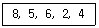
- 4, 2, 5, 6, 8
- 2, 4, 5, 6, 8
- 5, 2, 4, 6, 8
- 5, 6, 2, 4, 8
(정답률: 68%)
37. 데이터베이스 설계 순서로 옳은 것은?
- 논리적 설계→개념적 설계→물리적 설계
- 개념적 설계→논리적 설계→물리적 설계
- 물리적 설계→논리적 설계→개념적 설계
- 논리적 설계→물리적 설계→개념적 설계
(정답률: 64%)
38. 다음과 같은 이진트리의 Preorder 운행 결과는?
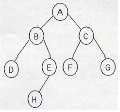
- A B D E H C F G
- A B C D E F G H
- A H E B F G C D
- D B H E A F C G
(정답률: 70%)
39. 데이터베이스의 특성으로 옳지 않은 것은?
- 실시간 접근성(Real-Time Accessibility)
- 계속적인 변화(Continuous Evolution)
- 동시 공용(Concurrent Sharing)
- 주소에 의한 참조(Location Reference)
(정답률: 65%)
40. A, B, C, D의 순서로 정해진 자료를 스택에 다음과 같이 입출력 작업을 수행한 후의 결과로 옳은 것은?
- A, B, C, D
- C, B, A, D
- A, B, D, C
- C, B, D, A
(정답률: 50%)
3과목: 전자계산기구조
41. 간접 사이클(Indirect cycle)을 옳게 나타낸 마이크로오퍼레이션은? (단, MAR : memory address register, MBR : memory buffer register, IEN : interrupt enable)
- MAR←MBR(AD),
- MAR←PC,
MBR←M(MAR)
MBR←M(MAR), PC←PC+1
OPR←MBR(OP), I←MBR(I) - MAR←MBR(AD),
- MAR(AD)←PC, PC←0,
MBR←AC
MAR←PC, PC←PC+1
M←MBR
M←MBR, IEN←0
(정답률: 20%)
42. 하드웨어 원인에 의한 인터럽트에 속하지 않는 것은?
- 정전(Power fail)
- machine check
- overflow/underflow
- 프로그램 수행이 무한 루프일 때 time에 의한 발생
(정답률: 30%)
43. 16바이트의 블록 크기와 64블록으로 구성된 캐시에서 바이트 주소 1200이 사상(mapping)되는 블록 번호는?
- 10
- 11
- 12
- 13
(정답률: 24%)
44. 2-주소 명령어 형식으로 Y = (A + B) * (C + D) 연산을 표와 같이 수행했을 때 각 ( )에 알맞은 것은? (단, R1, R2은 레지스터를 나타냄)
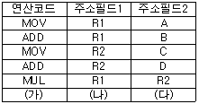
- (가) : MOV, (나) : Y, (다) : R1
- (가) : MOV, (나) : A, (다) : B
- (가) : ADD, (나) : Y, (다) : R1
- (가) : ADD, (나) : A, (다) : B
(정답률: 36%)
45. 다음 프로그램 이행 특성 중 stack을 가장 효과적으로 이용할 수 있는 것은?
- iteration
- recursion
- multiprogramming
- miltiprocessing
(정답률: 31%)
46. 기억장치를 각 모듈이 번갈아 가며 접근하는 방법은?
- 페이징
- 스테이징
- 인터리빙
- 세그멘팅
(정답률: 47%)
47. 3-주소 명령어의 설명으로 옳은 것은?
- 결과는 1st operand에 남는다.
- 결과는 2nd operand에 남는다.
- 결과는 3rd operand에 남는다.
- 결과는 임시 구역에 남는다.
(정답률: 40%)
48. BSA(Branch and Save return Address)의 마이크로 동작 중 시간 T0에서 실행하는 동작이 아닌 것은? (단, T0는 sequencer 출력을 나타냄)
- PC←PC+1
- MAR←MBR(AD)
- MBR(AD)←PC
- PC←MBR(AD)
(정답률: 32%)
49. 상대 주소 지정방식(Relative Addressing Mode)을 사용하는 컴퓨터에서 PC(Program Counter)의 값이 (2FA50)16(Displacement)값이 (0B)16 이라면 실제 데이터가 들어 있는 메모리의 주소는 얼마인가?
- (2FA500B)16
- (2FA45)16
- (0B2FA50)16
- (2FA5B)16
(정답률: 47%)
50. 동기 고정식 마이크로 오퍼레이션 제어의 특성을 설명한 것이 아닌 것은?
- 제어장치의 구현이 간단하다.
- 중앙처리장치의 시간 이용이 비효율적이다.
- 여러 종류의 마이크로 오퍼레이션의 수행시 CPU사이클 타임이 실제적인 오퍼레이션 시간보다 길다.
- 마이크로 오퍼레이션이 끝나고 다음 오퍼레이션이 수행될 때까지 시간지연이 있게 되어 CPU 처리 속도가 느려진다.
(정답률: 34%)
51. 다음 회로에서 OR게이트의 입력으로 연결되어야 할 디코더 출력들로 옳은 것은?
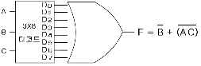
- D1, D4, D5, D6
- D0, D1, D2, D3, D4, D5, D6
- D0, D1, D2, D4, D5, D6
- D4, D5
(정답률: 33%)
52. 접근 시간(access time)이 빠른 순서부터 나열된 것은?
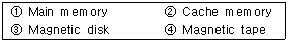
- ①, ②, ③, ④
- ②, ①, ③, ④
- ③, ①, ②, ④
- ③, ②, ①, ④
(정답률: 36%)
53. 다음은 정규화된 부동소수점(floating point) 방식으로 표현된 두 수의 덧셈과정이다. 다음 중 그 순서가 바르게 나열된 것은? (단, A:정규화, B:지수의 비교, C:가수의 정렬, D:가수의 덧셈)
- B-C-D-A
- C-B-D-A
- A-C-B-D
- A-B-C-D
(정답률: 38%)
54. 다음 논리회로 중 성격이 다른 것은?
- 디코더
- 반가산기
- 인코더
- 카운터
(정답률: 31%)
55. 기억장치의 자료처리 속도를 나타내는 밴드폭(bandwidth)이란?
- 계속적으로 기억장치에서 데이터를 읽거나 저장할 때 1초 동안에 사용되는 비트 수
- 필요에 따라 주기억장치에 사용되는 바이트의 사용량
- 1초 동안에 사용되는 워드(WORD)의 사용량
- 계속적으로 사용되는 데이터의 사용량을 1분 동안에 사용하는 바이트의 수를 표시
(정답률: 52%)
56. 다음 명령어의 실행에 필요한 메모리 참조 횟수는? (단, 각 오퍼랜드는 메모리 간접 주소 모드로 지정)
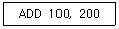
- 2
- 4
- 6
- 8
(정답률: 19%)
57. 인터럽트 처리 루틴에서 반드시 사용되는 레지스터는?
- Index Register
- Accumulator
- Program Counter
- MAR
(정답률: 49%)
58. 하드웨어 신호에 의하여 특정 번지의 서브루틴을 수행하는 것을 무엇이라 하는가?
- DMA
- vectored
- subroutine call
- handshaking mode
(정답률: 30%)
59. 다음 그림은 입출력 시스템의 구성도이다. ①,②,③,④의 내용을 순서대로 나열한 것은?
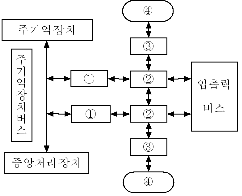
- 입출력 제어기, 입출력 장치제어기, 인터페이스, 입출력 장치
- 입출력 장치제어기, 입출력 제어기, 인터페이스, 입출력 장치
- 입출력 제어기, 인터페이스, 입출력 장치제어기, 입출력장치
- 인터페이스, 입출력 장치제어기, 입출력 제어기, 입출력 장치
(정답률: 32%)
60. 기억장치에서 DRO(Destructive Read Out)의 성질을 갖고 있는 메모리는?
- 반도체 메모리
- 자기코어 메모리
- 자기디스크 메모리
- 자기테이프 메모리
(정답률: 20%)
4과목: 운영체제
61. 페이징 기법에 대한 설명으로 옳지 않은 것은?
- 동적 주소 변환 기법을 사용하여 다중 프로그래밍의 효과를 증진시킨다.
- 내부 단편화가 발생하지 않는다.
- 프로그램을 동일한 크기로 나눈 단위를 페이지라고 하며, 이 페이지를 블록으로 사용하는 기법이다.
- 페이지 맵 테이블이 필요하다.
(정답률: 45%)
62. UNIX에서 파일의 사용 허가 지정에 관한 명령어는?
- mv
- ls
- chmod
- fork
(정답률: 55%)
63. 분산 처리 시스템의 설계 목적으로 거리가 먼 것은?
- 확장의 용이성
- 보안의 용이성
- 연산속도 향상
- 자원과 데이터의 공유성
(정답률: 52%)
64. 시스템 소프트웨어의 하나인 로더(Loader)의 기능에 해당하지 않는 것은?
- Allocation
- Linking
- Translation
- Relocation
(정답률: 49%)
65. 운영체제의 기능으로 거리가 먼 것은?
- 통신 네트워크 관리 기능
- 시스템에서의 에러 처리 기능
- 시스템의 바이러스 자동 퇴치 기능
- 병렬 수행을 위한 편의성 제공 기능
(정답률: 54%)
66. 주기억장치 배치 전략 기법으로 First-Fit 방법을 사용할 경우 그림과 같은 기억장소 리스트에서 10k 크기의 작업은 어느 기억공간에 할당 되는가?
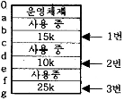
- 1번 부분
- 2번 부분
- 3번 부분
- 할당되지 않는다.
(정답률: 59%)
67. 다음 설명의 (A)와 (B)에 들어갈 내용으로 옳은 것은?
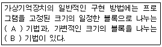
- (A) : Virtual Address, (B) : Paging
- (A) : Paging, (B) : Segmentation
- (A) : Segmentation, (B) : Fragmentation
- (A) : Segmentation, (B) : Compaction
(정답률: 45%)
68. 특정 프로세스의 작업이 중단되어 CPU를 다른 프로세스에게 넘겨줄 때, 전 프로세스의 레지스터들은 저장되고, 실행될 프로세스의 레지스터를 시스템에 적재하는 작업을 무엇이라고 하는가?
- Dispatch
- Wake Up
- Context Switching
- Suspended
(정답률: 42%)
69. 레코드가 직접 액세스 기억장치의 물리적 주소를 통해 직접 액세스 되는 파일 구조는?
- Sequential File
- Indexed Sequential File
- Direct File
- Partitioned File
(정답률: 64%)
70. UNIX에서 커널에 대한 설명으로 옳지 않은 것은?
- UNIX 시스템의 중심부에 해당한다.
- 사용자의 명령을 수행하는 명령어 해석기이다.
- 프로세스 관리, 기억장치 관리 등을 담당한다.
- 컴퓨터 부팅시 주기억장치에 적재되어 상주하면서 실행된다.
(정답률: 37%)
71. 파일 시스템의 기능이라고 볼 수 없는 것은?
- User Interface 제공
- Backup 과 Recovery 능력
- 정보를 암호화(encryption)하고 해독(decrypt)할 수 있는 능력
- Interrupt에 자동 대처하는 능력
(정답률: 38%)
72. 임계영역(Critical Section)에 대한 설명으로 옳은 것은?
- 프로세스들의 상호배제(Mutual Exclusion)가 일어나지 않도록 주의해야 한다.
- 임계영역에서 수행 중인 프로세스는 인터럽트가 가능한 상태로 만들어야 한다.
- 어느 한 시점에서 둘 이상의 프로세스가 동시에 자원 또는 데이터를 사용하도록 지정된 공유 영역을 의미한다.
- 임계 영역에서의 작업은 신속하게 이루어져야 한다.
(정답률: 42%)
73. PCB(PROCESS CONTROL BLOCK)가 포함하고 있는 정보가 아닌 것은?
- 프로세스의 현 상태
- 중앙처리장치 레지스터 보관 장소
- 할당된 자원에 대한 포인터
- 프로세스의 사용 빈도
(정답률: 35%)
74. UNIX에서 파일에 대한 정보를 갖고 있는 inode 의 내용으로 볼 수 없는 것은?
- 파일 링크 수
- 파일 소유자의 식별 번호
- 파일의 최초 변경시간
- 파일 크기
(정답률: 60%)
75. 디스크 입출력 요청 대기 큐에 다음과 같은 순서로 기억 되어 있다. 현재 헤드가 53에 있을 때, 이들 모두를 처리하기 위한 총 이동 거리는 얼마인가? (단, FCFS 방식을 사용한다.)
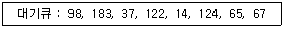
- 320
- 640
- 710
- 763
(정답률: 27%)
76. 사용자는 단말 장치를 이용하여 운영체제와 상호 작용하며, 시스템은 일정시간 단위로 CPU를 한 사용자에서 다음 사용자로 신속하게 전환함으로써, 각각의 사용자들은 실제로 자신만이 컴퓨터를 사용하고 있는 것처럼 사용할 수 있는 처리 방식은?
- Batch Processing System
- Time-Sharing Processing System
- Off-Line Processing System
- Real Time Processing System
(정답률: 40%)
77. 다음 중 가장 바람직한 스케줄링 정책은?
- CPU 이용률을 줄이고 반환시간을 늘린다.
- 응답시간을 줄이고 CPU 이용률을 늘린다.
- 대기시간을 늘리고 반환시간을 줄인다.
- 반환시간과 처리율을 늘린다.
(정답률: 57%)
78. 다음 표와 같이 작업이 제출되었을 때 Round-Robin 정책을 사용하여 스케줄링하면 평균 반환시간은 얼마인가? (단, 작업 할당시간은 4시간으로 한다.)
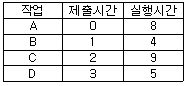
- 19.75
- 19.25
- 18.75
- 18.25
(정답률: 23%)
79. 다음 설명에 해당하는 디렉토리는?
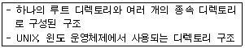
- 1단계 디렉토리
- 비순환 그래프 디렉토리
- 2단계 디렉토리
- 트리 디렉토리
(정답률: 56%)
80. 분산처리 시스템에서 분산의 대상에 대한 설명으로 옳지 않은 것은?
- 공유자원에 접근할 경우 시스템 유지를 위해 제어를 분산할 필요가 있다.
- 처리기와 입출력 장치와 같은 물리적인 자원을 분산할 수 있다.
- 분산처리 시스템에서 분산의 대상이 되는 것은 하드웨어와 제어이며, 자료는 분산 대상이 아니다.
- 시스템 성능과 가용성을 증진하기 위해 자료를 분산할 수 있다.
(정답률: 59%)
5과목: 마이크로 전자계산기
81. 비수치 처리, 특히 데이터베이스를 다루는 컴퓨터 시스템에서 데이터베이스 처리 전용으로 주컴퓨터에 결합해서 사용하는 프로세서는?
- 백엔드 프로세서
- 코프로세서
- 비트 슬라이스 마이크로프로세서
- 스칼라 프로세서
(정답률: 40%)
82. 다음 중 의사(pseudo) 명령어가 아닌 것은?
- EQU(equate)
- ORG(origin)
- MOV(move)
- END(program end)
(정답률: 21%)
83. 오픈 소스(open source) 등의 장점으로 최근 임베디드 시스템 개발에 많이 사용되는 운영체제는 무엇인가?
- MS-DOS
- MS-WINDOWS
- LISP
- LINUX
(정답률: 66%)
84. DRAM의 설명 중 가장 옳지 않은 것은?
- 내부에 커패시터(capacitor)를 사용한다.
- 재생(refresh)시키기 위한 회로가 필요하다.
- 집적도가 높아 저장 용량이 크다.
- 비트 단위당 가격이 SRAM에 비해 높다.
(정답률: 56%)
85. 다음 중 ICE(In-Circuit Emulator)의 기능으로 볼 수 없는 것은?
- 임의의 어드레스로 실행을 정지시키는 브레이크 포인트 기능
- 프로그램의 특정 명령을 실행할 대마다 지정된 메모리의 내용을 출력하는 싱글스텝 기능
- 역어셈블 기능
- 크로스컴파일 기능
(정답률: 25%)
86. 가상기억 장차에 대한 설명으로 틀린 것은?
- 주기억 장치의 기억 용량보다 더 큰 주소 영역을 갖는 프로그램을 사용 할 수 있다.
- 가상기억 장치에 사용되는 보조기억장치는 직접 접근이 가능한 기억장치이어야 한다.
- 프로그램을 기억 공간에서 작성하여 번지 공간으로 이동하여 실행하게 된다.
- 번지 변환 방법에는 직접 사상, 연관 사상, 페이지 번지 변환 등이 있다.
(정답률: 31%)
87. CPU의 상태 플래그(status flag)에 관한 설명 중 틀린 것은?
- 보조캐리 플래그(auxiliary carry flag) BCD 연산에 사용된다.
- Z 플래그(zero flag)는 ALU 연산 결과가 0인지 여부에 따라 셋트 된다.
- N 플래그(negative flag)는 ALU 연산 결과가 음수인지 여부에 따라 셋트 된다.
- 제일 왼쪽 비트에서 발생되는 올림수를 Cp, 왼쪽의 2번째 비트에서 발생되는 올림수를 Cs라 할 때 오버플로우(overflow) 발생 조건은 Cs + Cp로 주어지게 된다.
(정답률: 61%)
88. Reader/Write signal이나 Chip Select signal 등의 신호는 어느 버스에 싣게 되는가?
- 자료 버스
- 주소 버스
- 제어 버스
- 보조 버스
(정답률: 65%)
89. 다음 그림과 같이 메모리의 주소가 8비트(A7 ~ A0)로 구성된 메모리의 주소를 지정하고자 한다. 메모리 어드레스 디코더의 A7, A6 입력이 모두 1 이 입력되는 경우 어드레스 공간을 16진수로 올바르게 나타낸 것은?
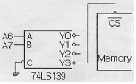
- 00h ~ 30h
- 80h ~ BFh
- C0h ~ FFh
- 18h ~ 1Fh
(정답률: 44%)
90. 명령 실행 사이클의 동작 명령으로서 번지의 명령이나 프로그램 루프의 실행 횟수를 계산하는데 유용한 명령으로 지정된 번지에 저장된 워드의 내용을 1 증가시킨 후 그 결과가 0 이면 다음 명령을 건너뛰고 아니면 그대로 다음 명령을 실행시키는 명령은?
- ISZ 명령
- BSA 명령
- BUN 명령
- STA 명령
(정답률: 36%)
91. 어셈블리 명령어 중 BNE(Branch if Not Equal) 명령문이 수행될 때 점검하는 플래그(flag)는?
- 캐리(carry) 플래그
- 오버플로우(overflow) 플래그
- 영(zero) 플래그
- 음수(negative) 플래그
(정답률: 36%)
92. 다음의 정보통신용 버스 중 병렬전송이 아닌 것은?
- VME bus
- RS-232C
- Multi bus
- IEEE-488 bus
(정답률: 44%)
93. 다음 중 직접 접근(direct access) 기억 장치가 아닌 것은?
- floppy disk
- magnetic tape
- hard disk
- magnetic drum
(정답률: 49%)
94. 마이크로프로세서 내에 있는 레지스터로서 프로그램을 구성하고 있는 명령어들의 실행순서를 지정하여 주는 것은?
- 명령레지스터
- 프로그램카운터
- 번지레지스터
- 누산기
(정답률: 39%)
95. 마이크로컴퓨터의 ROM이 4096비트이면 단어의 길이가 8비트인 경우 몇 워드인가?
- 182
- 312
- 256
- 512
(정답률: 63%)
96. 인터럽트 반응시간(interrupt response time)에 대하여 맞게 설명한 것은?
- 인터럽트 요청신호가 발생한 후부터 해당 인터럽트 취급 루틴의 수행이 시작될 때까지
- 인터럽트 요청신호가 발생한 후부터 해당 인터럽트 취급 루틴의 수행이 완료될 때까지
- 인터럽트 요청신호가 발생한 후 또는 다른 인터럽트 요청신호가 발생할 때까지
- 인터럽트 취급루틴의 수행을 시작할 때부터 완료할 때까지
(정답률: 38%)
97. TTL 출력 오류 중 논리값이 0도 아니고 1도 아닌, 고임피던스 상태를 가지며, 특히 bus 구조에 적합한 것은?
- Ti-state 출력
- Open collector 출력
- Totem-pole 출력
- TTL 표준출력
(정답률: 36%)
98. 스택 포인터를 1 증가시키고, 스택 포인터가 가리키는 곳에 60H 번지의 내용을 저장하는 명령어로 알맞은 것은?
- POP 50H
- PUSH 50H
- READ 50H
- MOVE 50H
(정답률: 43%)
99. 다음 중 병렬처리기능을 갖춘 프로세서를 나타내는 특징적인 구조가 아닌 것은?
- 파이프라인 처리기
- DMA 처리기
- 배열 처리기
- 다중 처리기
(정답률: 34%)
100. 다음 중 DMA(Direct Memory Access)에 대한 설명 중 틀린 것은?
- 메모리와 외부회로가 직접 데이터를 주고받는다.
- 고속으로 대량의 데이터를 전송할 대 주로 사용한다.
- memory mapped I/O 방식의 일종이다.
- DMA 제어기는 내부에 어드레스 레지스터, 카운터 레지스터를 가진다.
(정답률: 43%)